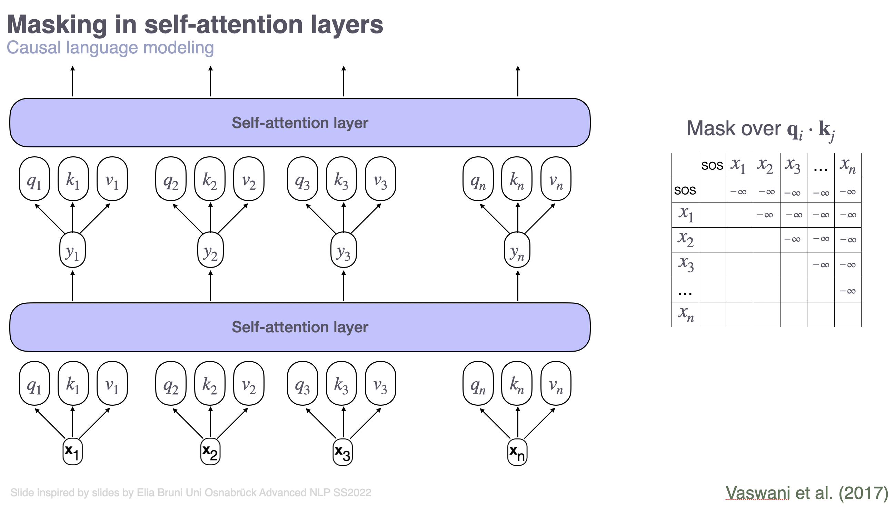

Sheet 3.1: Tokenization & Transformers#
Author: Polina Tsvilodub
In this sheet, we will focus on two topics: tokenization, the process of converting raw text into single tokens which are mapped onto neural-network friendly numerical representations; and transformers, the architecture behind state-of-the-art language models. The learning goals for this sheet are:
understand core steps of tokenization
learn to use state-of-the-art tokenization correctly
learn to build transformers in PyTorch
understand pretrained transformers like GPT-2 which can be loaded from HuggingFace.
Tokenization#
Under the hood, neural networks are complicated functions; therefore, they cannot deal with raw text represented as strings, but uses numerical representations of the text. This conversion is done by a tokenizer, and the process is called tokenization. Tokenization commonly consists of the following steps:
splitting the input text into words, subwords, or symbols (like punctuation) that are called tokens
mapping each token to an integer (or, index)
adding additional inputs (or, special tokens) that may be useful to the model
The set of unique tokens of a given tokenizer is often called the vocabulary.
Exercise 3.1.1: Simple tokenization
We have seen the simplest version explicit version of tokenization in sheet 2.4. Here, the “tokenizer” is just a simple mapping.
What are the minimal units, i.e., tokens in sheet 2.4?
What is the range of indices representing tokens in sheet 2.4? I.e., how many different tokens are there?
However, this simple approach has several limitations. Specifically, the vocabulary is very limited and is manually defined a priori. While such an approach may work for simple tasks or very specific domains like predicting names, it is not very useful for dealing with more general texts which may include numbers, emojis, or different languages with different alphabets. Under this simple approach, we wouldn’t be able to represent any of these things.
To allow for more flexibility but avoid having to manually specify all possible tokens, special tokenization approaches have been developed. The most prominent tokenization algorithm used, e.g., for the GPT models, is the so-called byte-pair-encoding (BPE) tokenization. BPE tokenizers are trained, i.e., the can be adjusted on specific texts so as to optimally represent the data.
BPE tokenization#
Here are the core steps behind BPE tokenization:
Text from the training corpus is normalized. That is, text undergoes general preprocessing like removing unnecessary whitespaces, lower-casing, possibly doing unicode normalization.
Text in the corpus is pre-tokenized. Here, the text is commonly split, e.g., into single words (i.e., by whitespace) and punctuation.
Next, all characters used in the preprocessed text are identified. Special tokens are added (more on these below).
Next, frequencies of pairs of characters in the training corpus are identified. The most frequent pair is then merged into a single token, and the frequencies are identified again, now using the merged representation of the identified pair. This is repeated, until a desired vocabulary size is reached.
After training, to tokenize a new text, the learned merge rules are applied to it and the respective tokens are assigned to the text.
The important take-aways are:
Tokenizers are training data-dependent. This means, what exactly is represented by single tokens depends on the freuqencies of different words and their contexts in the corpus. The size of the vocabulary is determined by the developers.
Same characters or word-pieces can be mapped onto different tokens, depending on their context! For instance, the same word at the beginning or in the middle of a sentence can be represented with different tokens.
If you want to dive deeper into the algorithm, take a look at this tutorial. Another common approach is WordPiece tokenization; you can learn more here.
Special tokens#
An important aspect of tokenizers are special tokens. They are called “special” because they carry special meaning rather than simply representing parts of a text. Common SOTA tokenizers have the following special tokens:
beginning-of-sequence (BOS) (or, start-of-sequence, SOS) token: it is prepended to the start of every training sequence, and at inference time, it is used to signal to the LM that text should be predicted. In a sense, it represents a “signal to act”.
Different tokenizers use different strings as BOS. For instance, these could be “<s>”, “|startofsequence|” or anything thelike.
end-of-sequence (EOS) token: it is appended to the end of every training sequence so as to signal to the LM that a text is “finished” at a certain point. Thereby the LM learns to predict finite sequences. At inference time, once the LM samples the EOS, it stops generating further tokens.
Different tokenizers use different strings as EOS. For instance, these could be “<\s>”, “|endofsequence|” or anything thelike.
pad token: it is used to make a sequence longer and have a certain number of tokens. This is used for training LMs on batches of sequences. Since each batch of \(n\) sequences is represented by a matrix with the dimensions \(n \times m\), each sequence has to have the length of \(m\) tokens. If, in fact, it only has less than \(m\) tokens, we append pad tokens so that the sequence has \(m\) tokens.
The pad token could be, e.g., “[PAD]”. Sometimes, however, pad tokens are not provided by a pretrained tokenizer. In this case, usually the EOS token is set as the pad token.
It is important to note that pad tokens are an “engineering” necessity rather than tokens carrying meaning. Therefore, these are often masked during training, while other special tokens are not. More on masking below.
We can set the padding side for a tokenizer. It represents on which side of the sequence the pad tokens should be added. For auto-regressive models (i.e., common LMs), the padding side should be on the left. Concretely, a padded sequence should, e.g., look like this: “[PAD] [PAD] [PAD] Hi there!”
unknown (UNK) token: it is used to represent a character or a part of a sequence which cannot be mapped to known tokens. Under some tokenization approaches (e.g., byte level pair encoding), UNK tokens aren’t possible in principle, and therefore, such tokenizers don’t have UNK tokens.
system tokens: these tokens have been introduced more recently with the introduction of chat-optimized and assistant LMs, and are used to delineate to an LM different types of contents. These are, for instance, special tokens which are introduced to delineate system prompts, user inputs, previous model responses, etc (more on prompting and assistants in the next lectures).
These special tokens are added to the vocabulary of a tokenizer, i.e., represented by their own token indices.
The important take-away is that, in order to get optimal performance of a trained LM, one must use tokenization in the same way as what was used when the model was trained!
Outlook (optional): EOS tokens#
Next to the intuitive role of signaling to the LM that a sequence ended, EOS tokens play an important conceptual role. Specifically, it is necessary to define a set of finite strings so as to ensure that the LM represents a valid probability measure over the vocabulary (or, alphabet) (Du et al., 2022). See these lecture notes for more information.
Pretrained tokenizers#
In practice, as with language models, we don’t have to create tokenizers ourselves – we can download pretrained tokenizers that were created for specific LMs and are shipped with them on HF. We have already used a pretrained tokenizer in the previous sheets under the hood. Below, we take a closer look at the pretrained GPT-2 tokenizer.
# load tokenizer
from transformers import AutoTokenizer
tokenizer = AutoTokenizer.from_pretrained("gpt2")
First, we inspect the configurations of the tokenizer.
print("Number of tokens of GPT2 tokenizer", tokenizer.vocab_size)
print("GPT2 vocabulary ", list(tokenizer.vocab.items())[:10])
The core functionality of the tokenizer is to map strings to token IDs (i.e., encode), and vice versa - map lists of token IDs back to human-readable texts (i.e., decode). By calling the tokenizer, we automatically call the encoding function. Note in the example below that the same word (“the”) can be mapped onto different tokens, depending on its context.
text1 = "the quick brown fox jumped over the lazy dog"
enc1 = tokenizer(text1)
print("Encoded text 1: ", enc1)
# we look at the single tokens and chek what strings they represent
for tok in enc1.input_ids:
print("Token: ", tok, "String: ", tokenizer.decode(tok))
# note that often a single token corresponds to only a part of a word
# and that the same word in different languages might be represented by different tokens
text2 = "attention is all you need"
enc2 = tokenizer(text2)
print("Encoded text 2: ", enc2)
for tok in enc2.input_ids:
print("Token: ", tok, "String: ", tokenizer.decode(tok))
# German text
text3 = "der schnelle braune Fuchs sprang über den faul Hund"
enc3 = tokenizer(text3)
print("Encoded text 3: ", enc3)
for tok in enc3.input_ids:
print("Token: ", tok, "String: ", tokenizer.decode(tok))
Exercise 3.1.2: Pretrained tokenizers
Inspect the three tokenization related files that are loaded together with the pretrained GPT-2 here. What do the single files contain?
What kind of special tokens does the GPT-2 tokenizer have? (Hint: use the HF documentation of the respective tokenizer)
Find out what kind of special Llama-2 chat tokens there are (look for
meta-llama/Llama-2-7b-chat-hfon HF). How should they be used to represent the system prompt and the user input? (Hint: use the HF documentation. You can also find out more about LLama-chat prompting here)
After tokenization, each token is mapped onto an embedding. As discussed in the lecture, there are different types of embeddings: type-based and contextualized embeddings. In both cases, the token IDs are mapped to vector representations as the first processing step in an LM. For type-based representations, these vectors are already pretrained static embeddings. For contextualized cases, these vectores are passed through the net and only the processed vectors are considered embeddings.
The initial mapping is done by creating one-hot vector as a representation of each index. These are then multipled with the embedding matrix, which results in embedding representations of each token. These are then further processed.
Attention masks#
Note that, next to input IDs (i.e., token IDs), the tokenizer encoding returns an attention mask attention_mask. The attention mask has the same shape as the input IDs. It is used for training in order to allow the transformer to base its predictions only on certain parts of the input text. Specifically, for causal LMs, attention masks are needed because we can nicely parallelise the training of transformers and process an entire sequence at once (in contrast to RNN training); but we still want to base the predictions only on the preceding part of a sentence.
In the widespread HF implementation, the attention mask has a 1 to indicate that the transformer should attend to tokens at the particular positions, while a 0 indicates that the transformer should not attend to the given token. The attention mask provided by the tokenizer (or created manually by the user) is further transformed and added to the attention computations. This operation results in “zero-ing out” contributions of tokens we don’t want to attend to when computing a given token representation, essentially as if they weren’t there.
Causal mask: The attention mask is used to enable causal language modeling, i.e., to hide tokens that come after a token at a given position that is currently used for training. For training in a transformer in parallel over the entire sentence, the mask is created as a matrix, where each row \(i\) represents the correct mask for the \(i\)-th token. The matrix on the right in the picture shows an example causal attention mask.

For more details on how the forward step through a transformer, including attention mask application and positional embedding works, please carefully look at this tutorial.
If you are curious to see the HF implementation of masking, you can (optionally!) find them for GPT-2 here.
Exercise 3.1.3: Embeddings & Attention
Consider the sentence “The quick fox jumped.”. Write down the causal attention mask that we would use for i=2, i.e,. when training the model to predict the word that comes after “fox”. Assume word / punctuation-sign level tokenization.
Consider a vocabulary that consists of five tokens. Consider the following embedding matrix with 3-dimensional embeddings: $$ E =
(1)#\[\begin{bmatrix} >0.11 & 0.02 & 0.37\\ >0.56 & 0.89 & 0.41 \\ >0.60 & 0.89 & 0 \\ > 0.20 & 1 & 0.62 \\ > 0.12 & 0.03 & 0.29 \\ >\end{bmatrix}\]$$ Extract the embedding for the token with the ID 2 (assume 0-indexing). Write down the respective calculation step. 3. What is a very well known masked LM architecture?
The contents of the first part of the sheet were inspired by this tutorial.
Transformers#
In the lecture we have now considered what the transformer architecture actually is under the hood. In this part of the sheet, the formal concepts of the architecture are mapped on their implementation, as provided by the PyTorch library and by HuggingFace within the pre-build and pre-trained models.
PyTorch#
PyTorch provides a pre-build transformer architecture which allows to specify your desired model via different parameters.
Exercise 3.1.4: Simple transformers in PyTorch
Write a docstring for the following model class definition. Make sure you can map the parameters of the model onto concepts that were discussed in the lecture.
# imports
import torch.nn as nn
import torch
import math
class PositionalEncoding(nn.Module):
"""
Inject some information about the relative or absolute position of the tokens in the sequence.
The positional encodings have the same dimension as the embeddings, so that the two can be summed.
Here, we use sine and cosine functions of different frequencies.
.. math:
PosEncoder(pos, 2i) = sin(pos/10000^(2i/d_model))
PosEncoder(pos, 2i+1) = cos(pos/10000^(2i/d_model))
where pos is the word position and i is the embed idx
Args
----
d_model: the embed dim (required).
dropout: the dropout value (default=0.1).
max_len: the max. length of the incoming sequence (default=5000).
Examples:
>>> pos_encoder = PositionalEncoding(d_model)
"""
def __init__(self, d_model, dropout=0.1, max_len=5000):
super(PositionalEncoding, self).__init__()
self.dropout = nn.Dropout(p=dropout)
pe = torch.zeros(max_len, d_model)
position = torch.arange(0, max_len, dtype=torch.float).unsqueeze(1)
div_term = torch.exp(torch.arange(0, d_model, 2).float() * (-math.log(10000.0) / d_model))
pe[:, 0::2] = torch.sin(position * div_term)
pe[:, 1::2] = torch.cos(position * div_term)
pe = pe.unsqueeze(0).transpose(0, 1)
self.register_buffer('pe', pe)
class TransformerModel(nn.Transformer):
"""
Container module with an encoder-decoder transformer model.
"""
def __init__(self, ntoken, ninp, nhead, nhid, nlayers, dropout=0.5):
"""
#### YOUR DOCSTRING HERE #####
"""
super(TransformerModel, self).__init__(
d_model=ninp,
nhead=nhead,
dim_feedforward=nhid,
num_encoder_layers=nlayers,
num_decoder_layers=nlayers,
dropout=dropout,
)
self.model_type = "Transformer"
self.src_mask = None
self.pos_encoder = PositionalEncoding(ninp, dropout)
self.input_emb = nn.Embedding(ntoken, ninp)
self.ninp = ninp
Exercise 3.1.5: Simple transformers in PyTorch
Consider the following transformer model. First, think about the dimensions of the different matrices that are part of the transformer, based on the parameters. Then, check the dimensions of the model instance (you can find a hint for accessing the different parameters of the model below). Does your prediction match the implementation?
# instantiate a model
# make sure to check that you understand what the single arguments mean -- ideally, add comments to each of them
transformer_model = TransformerModel(
128,
32,
1,
64,
3,
)
/opt/anaconda3/envs/understanding_llms/lib/python3.10/site-packages/torch/nn/modules/transformer.py:286: UserWarning: enable_nested_tensor is True, but self.use_nested_tensor is False because encoder_layer.self_attn.batch_first was not True(use batch_first for better inference performance)
warnings.warn(f"enable_nested_tensor is True, but self.use_nested_tensor is False because {why_not_sparsity_fast_path}")
# print the model
transformer_model
TransformerModel(
(encoder): TransformerEncoder(
(layers): ModuleList(
(0-2): 3 x TransformerEncoderLayer(
(self_attn): MultiheadAttention(
(out_proj): NonDynamicallyQuantizableLinear(in_features=32, out_features=32, bias=True)
)
(linear1): Linear(in_features=32, out_features=64, bias=True)
(dropout): Dropout(p=0.5, inplace=False)
(linear2): Linear(in_features=64, out_features=32, bias=True)
(norm1): LayerNorm((32,), eps=1e-05, elementwise_affine=True)
(norm2): LayerNorm((32,), eps=1e-05, elementwise_affine=True)
(dropout1): Dropout(p=0.5, inplace=False)
(dropout2): Dropout(p=0.5, inplace=False)
)
)
(norm): LayerNorm((32,), eps=1e-05, elementwise_affine=True)
)
(decoder): TransformerDecoder(
(layers): ModuleList(
(0-2): 3 x TransformerDecoderLayer(
(self_attn): MultiheadAttention(
(out_proj): NonDynamicallyQuantizableLinear(in_features=32, out_features=32, bias=True)
)
(multihead_attn): MultiheadAttention(
(out_proj): NonDynamicallyQuantizableLinear(in_features=32, out_features=32, bias=True)
)
(linear1): Linear(in_features=32, out_features=64, bias=True)
(dropout): Dropout(p=0.5, inplace=False)
(linear2): Linear(in_features=64, out_features=32, bias=True)
(norm1): LayerNorm((32,), eps=1e-05, elementwise_affine=True)
(norm2): LayerNorm((32,), eps=1e-05, elementwise_affine=True)
(norm3): LayerNorm((32,), eps=1e-05, elementwise_affine=True)
(dropout1): Dropout(p=0.5, inplace=False)
(dropout2): Dropout(p=0.5, inplace=False)
(dropout3): Dropout(p=0.5, inplace=False)
)
)
(norm): LayerNorm((32,), eps=1e-05, elementwise_affine=True)
)
(pos_encoder): PositionalEncoding(
(dropout): Dropout(p=0.5, inplace=False)
)
(input_emb): Embedding(128, 32)
)
Now, we want to actually look at the single components of the transformer. First, we can use the following code to see what kinds of attributes the different building blocks of the transformer modules have. For this, let’s pick the first encoder transformer layer and take a closer look at the self-attention:
transformer_model.encoder.layers[0].self_attn.__dict__
{'training': True,
'_parameters': OrderedDict([('in_proj_weight',
Parameter containing:
tensor([[ 0.1548, 0.1673, 0.2034, ..., 0.0239, 0.0457, -0.0236],
[ 0.1744, 0.1674, 0.1002, ..., 0.2152, -0.1966, 0.0204],
[-0.0915, -0.0941, -0.1385, ..., 0.1005, 0.0104, 0.1407],
...,
[-0.0569, -0.1587, -0.1596, ..., -0.0696, -0.1157, -0.0846],
[ 0.1056, -0.0601, -0.0706, ..., 0.1913, 0.1003, 0.0028],
[ 0.1869, -0.1173, 0.1173, ..., -0.0612, -0.1025, 0.0919]],
requires_grad=True)),
('q_proj_weight', None),
('k_proj_weight', None),
('v_proj_weight', None),
('in_proj_bias',
Parameter containing:
tensor([0., 0., 0., 0., 0., 0., 0., 0., 0., 0., 0., 0., 0., 0., 0., 0., 0., 0., 0., 0., 0., 0., 0., 0.,
0., 0., 0., 0., 0., 0., 0., 0., 0., 0., 0., 0., 0., 0., 0., 0., 0., 0., 0., 0., 0., 0., 0., 0.,
0., 0., 0., 0., 0., 0., 0., 0., 0., 0., 0., 0., 0., 0., 0., 0., 0., 0., 0., 0., 0., 0., 0., 0.,
0., 0., 0., 0., 0., 0., 0., 0., 0., 0., 0., 0., 0., 0., 0., 0., 0., 0., 0., 0., 0., 0., 0., 0.],
requires_grad=True))]),
'_buffers': OrderedDict(),
'_non_persistent_buffers_set': set(),
'_backward_pre_hooks': OrderedDict(),
'_backward_hooks': OrderedDict(),
'_is_full_backward_hook': None,
'_forward_hooks': OrderedDict(),
'_forward_hooks_with_kwargs': OrderedDict(),
'_forward_hooks_always_called': OrderedDict(),
'_forward_pre_hooks': OrderedDict(),
'_forward_pre_hooks_with_kwargs': OrderedDict(),
'_state_dict_hooks': OrderedDict(),
'_state_dict_pre_hooks': OrderedDict(),
'_load_state_dict_pre_hooks': OrderedDict(),
'_load_state_dict_post_hooks': OrderedDict(),
'_modules': OrderedDict([('out_proj',
NonDynamicallyQuantizableLinear(in_features=32, out_features=32, bias=True))]),
'embed_dim': 32,
'kdim': 32,
'vdim': 32,
'_qkv_same_embed_dim': True,
'num_heads': 1,
'dropout': 0.5,
'batch_first': False,
'head_dim': 32,
'bias_k': None,
'bias_v': None,
'add_zero_attn': False}
Equipped with the keys to different attributes of the self-attention block, we can closer inspect single components, e.g., the weight matrix:
# we can also directly print the shape of a given weight matrix
print("Shape of the encoder self attention matrix (combining, Q, K, V): ", transformer_model.encoder.layers[0].self_attn.in_proj_weight.shape)
Shape of the encoder self attention matrix (combining, Q, K, V): torch.Size([96, 32])
In particular, we see that the three matrices that are involved in computing attention scores – query, key and value matrices, are represented as one matrix. If we wanted to access them separately and, e.g., manually reimplement the attention weight computations, we can split the matrix:
in_proj_weight = transformer_model.encoder.layers[0].self_attn.in_proj_weight
q, k, v = torch.split(in_proj_weight, [32, 32, 32])
print("Query matrix shape ", q.shape)
print("Key matrix shape ", k.shape)
print("Value matrix shape ", v.shape)
# Note that if we want to re-compute the attention scores, we need to transpose the matrices
Query matrix shape torch.Size([32, 32])
Key matrix shape torch.Size([32, 32])
Value matrix shape torch.Size([32, 32])
Feel free to play around with these retrievals to better understand the architecture.
Pretrained transformers#
Below, we consider in more detail what is under the hood when we load a pretrained transformer from HF. We will look at GPT-2. GPT-2 is a decoder-only model. That is, it only uses self-attention and only has a decoder block. Under the hood, it also uses the same building blocks as the transformer above, but provides higher-level wrappers around the core functionality and already implements the required configurations that were developed as the GPT-2 architecture.
from transformers import GPT2LMHeadModel
# first, we load the pretrained model and inspect it
gpt2_lm = GPT2LMHeadModel.from_pretrained("gpt2")
print(gpt2_lm)
GPT2LMHeadModel(
(transformer): GPT2Model(
(wte): Embedding(50257, 768)
(wpe): Embedding(1024, 768)
(drop): Dropout(p=0.1, inplace=False)
(h): ModuleList(
(0-11): 12 x GPT2Block(
(ln_1): LayerNorm((768,), eps=1e-05, elementwise_affine=True)
(attn): GPT2Attention(
(c_attn): Conv1D()
(c_proj): Conv1D()
(attn_dropout): Dropout(p=0.1, inplace=False)
(resid_dropout): Dropout(p=0.1, inplace=False)
)
(ln_2): LayerNorm((768,), eps=1e-05, elementwise_affine=True)
(mlp): GPT2MLP(
(c_fc): Conv1D()
(c_proj): Conv1D()
(act): NewGELUActivation()
(dropout): Dropout(p=0.1, inplace=False)
)
)
)
(ln_f): LayerNorm((768,), eps=1e-05, elementwise_affine=True)
)
(lm_head): Linear(in_features=768, out_features=50257, bias=False)
)
gpt2_lm.transformer.h[0].attn.c_attn.__dict__
{'training': False,
'_parameters': OrderedDict([('weight',
Parameter containing:
tensor([[-0.4738, -0.2614, -0.0978, ..., 0.0513, -0.0584, 0.0250],
[ 0.0874, 0.1473, 0.2387, ..., -0.0525, -0.0113, -0.0156],
[ 0.0039, 0.0695, 0.3668, ..., 0.1143, 0.0363, -0.0318],
...,
[-0.2592, -0.0164, 0.1991, ..., 0.0095, -0.0516, 0.0319],
[ 0.1517, 0.2170, 0.1043, ..., 0.0293, -0.0429, -0.0475],
[-0.4100, -0.1924, -0.2400, ..., -0.0046, 0.0070, 0.0198]],
requires_grad=True)),
('bias',
Parameter containing:
tensor([ 0.4803, -0.5254, -0.4293, ..., 0.0126, -0.0499, 0.0032],
requires_grad=True))]),
'_buffers': OrderedDict(),
'_non_persistent_buffers_set': set(),
'_backward_pre_hooks': OrderedDict(),
'_backward_hooks': OrderedDict(),
'_is_full_backward_hook': None,
'_forward_hooks': OrderedDict(),
'_forward_hooks_with_kwargs': OrderedDict(),
'_forward_hooks_always_called': OrderedDict(),
'_forward_pre_hooks': OrderedDict(),
'_forward_pre_hooks_with_kwargs': OrderedDict(),
'_state_dict_hooks': OrderedDict(),
'_state_dict_pre_hooks': OrderedDict(),
'_load_state_dict_pre_hooks': OrderedDict(),
'_load_state_dict_post_hooks': OrderedDict(),
'_modules': OrderedDict(),
'nf': 2304,
'_is_hf_initialized': True}
Exercise 3.1.6: GPT-2 architecture
What are the dimensions of the embedding layer? What does each dimension represent? How do they relate to the vocabulary size and why is that so?
In order to understand the architecture, for yourself, answer the following questions: (a) how many transformer blocks does GPT-2 consist of? (b) Which layer type is used to compute attention weights? (c) What is the dimension of the resulting contextualized embedding?
Find out the mathematical formula that is used for Layer Normalization that was discussed in the lecture. What does it do? Why do we use it?
We can actually access the single components of the model. Let’s inspect the components of the first attention block in more detail. Feel free to play around with the printing to get an intuition how to acccess different parts of the model.
print("shape of the attention weights ", gpt2_lm.transformer.h[0].attn.c_attn.weight.shape)
print("Attention matrix shape")
# remove .shape to see the full matrix
gpt2_lm.transformer.h[0].attn.c_attn.weight.shape
Outlook (optional)#
For those who want to know more about topics that go beyond the contents of the sheet and the lecture, here are some pointers:
A different task that relies on text generation is image captioning. We have briefly seen it in the context of attention visualization. This paper introduces one of the first successful architectures in this domain.
How is this architecture related to the encoder-decoder models that we have seen in the lecture? What is similar, what differs?
Consider this paper which was mentioned in the lecture. What is different in terms of architecture?
Sentence Transformers: this is a commonly used sentence embedding library.
For yourself, try to understand the difference of these embeddings to contextualized embeddings that were discussed in the lecture.